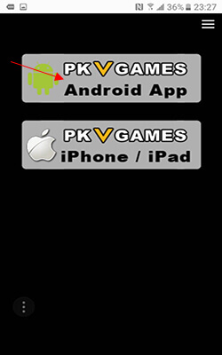
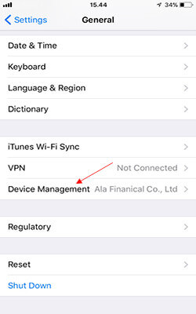

- Poker Texas
- Domino
- Capsa Susun
- Adu Q
- Bandar Q
- Bandar Poker
- Sakong
- Bandar66
- Perang Baccarat
- Android
- I O S
|
Texas Hold'em Poker
|
|
Sebelum anda memulai permainan Poker Hold'em, ada baiknya anda mengetahui terlebih dahulu peraturan-peraturan cara bermain Poker Texas Hold'em. Dalam permainan Hold'em, setiap player masing-masing akan mendapatkan 2 kartu private yang tertutup (lebih dikenal dengan istilah "hole cards"). Kemudian dealer akan membagikan 5 kartu diatas meja dengan posisi kartu terbuka (dikenal dengan istilah "community cards"). Selanjutnya setiap player akan mencari kombinasi antara 2 kartu yang mereka pegang dengan 5 kartu diatas meja untuk menghasilkan 5 kartu terbaik. |
|
Urutan Kartu
|
|
Urutan Ranking Kartu Texas Hold'em dimulai dari yang tertinggi adalah sebagai berikut : 1. Royal Flush
Urutan yang paling tinggi dan tidak terkalahkan. 5 kartu ini harus terdiri dari Ace, King, Queen, Jack, 10 dan harus memiliki corak yang sama. 2. Straight Flush

5 kartu yang berurutan dan memiliki corak yang sama. Jika ada player lain yang memiliki Straight Flush juga, maka pemenang ditentukan dari kartu yang memiliki nilai tertinggi dari urutan kartu tersebut. 3. Four of a Kind
4 kartu kembar dan 1 kartu samping sebagai "kicker". Jika player lain juga memiliki kartu Four of a Kind, maka player yang memilki kartu Four of a Kind tertinggi yang menang. Jika kartu Four of a Kind berada diatas meja (community cards), maka player yang memiliki kartu kelima ("kicker") tertinggi yang menang. 4. Full House
3 kartu kembar, dan 2 kartu kembar lainnya. Jika player lain juga memiliki Full House, maka player dengan 3 kartu kembar tertinggi yang menang. Jika 3 kartu kembar berada diatas meja (community cards), maka player dengan 2 kartu kembar tertinggi yang menang. 5. Flush
5 kartu dengan corak yang sama. Jika player lain juga memiliki kartu Flush, maka player yang memegang nilai kartu tertinggi yang menang, jika masih seimbang maka kartu kedua-tertinggi, ketiga-tertinggi, keempat-tertinggi dan kelima-tertinggi akan digunakan untuk mencari pemenangnya. Jika sampai kartu kelima-tertinggi juga masih sama, maka semua nilai taruhan yang berada diatas meja akan dibagi rata ke para pemenang. Corak kartu tidak dapat digunakan untuk penentuan kemenangan. 6. Straight
5 kartu yang memiliki nilai berurutan. Jika player lain juga memiliki kartu Straight, maka pemenang ditentukan dengan kartu yang memiliki nilai tertinggi. Kartu Ace dapat diposisikan pada urutan tertinggi maupun terendah. A,K,Q,J,10 (maka Ace adalah tertinggi), 5,4,3,2,A (maka Ace adalah terendah, 5 tertinggi). 7. Three of a Kind
3 kartu kembar dan sisa 2 kartu samping acak lainnya. Jika player lain juga memiliki kartu Three of a Kind, maka player dengan kartu Three of a Kind tertinggi yang menang. Jika kartu Three of a Kind berada diatas meja (community cards), maka player yang memiliki kartu samping dengan nilai tertinggi yang menang, jika masih seimbang maka kartu kedua-tertinggi yang akan menang. 8. Two Pair
2 pasang kartu kembar yang berbeda dan 1 kartu samping acak lainnya. Jika beberapa players memiliki kartu Two Pair, maka pemegang kartu kembar dengan nilai tertinggi yang menang, jika masih seimbang maka kartu kembar kedua-tertinggi yang menang, dan jika masih seimbang juga maka pemegang kartu samping dengan nilai tertinggi yang menang. 9. One Pair
2 kartu kembar dan 3 kartu acak lainnya. Dalam keadaan seimbang, maka player dengan nilai kartu acak tertinggi yang menang, jika masih seimbang juga maka kartu acak kedua-tertinggi atau ketiga-tertinggi akan digunakan untuk penentuan kemenangan. 10. High Card

Susunan kartu acak yang sama sekali tidak memenuhi kriteria jenis kartu diatas sebelumnya. Penentuan kemenangan akan diambil berdasarkan nilai kartu tertinggi atau kedua-tertinggi, ketiga-tertinggi, keempat-tertinggi dan kelima-tertinggi. |
|
Cara Bermain Texas Hold'em Poker
|
|
The Blinds
Dalam permainan Hold'em, player yang mendapatkan button atau tanda "D" biasa disebut "the Dealer Button". Sebelum kartu dibagikan, player pertama yang duduk searah jarum jam disamping player yang mendapatkan button D secara otomatis akan meletakkan chips diatas meja sejumlah "Small Blind", selanjutnya player disamping Small Blind ini yang searah jarum jam secara otomatis akan meletakkan chips sejumlah "Big Blind" dimana jumlah "Big Blind" ini adalah 2x lebih besar dari jumlah "Small Blind". Pre-Flop
Setelah semua pemain masing-masing telah mendapatkan 2 kartu, kini setiap pemain mendapatkan opsi untuk memainkan kartu mereka dengan pilihan "call", "raise", atau "fold". The Flop
Setelah sesi Pre-Flop selesai, kini dealer akan membagikan 3 kartu diatas meja dengan posisi terbuka, ini disebut dengan The Flop. Pada putaran ini, opsi pilihan betting selanjutnya jatuh ke pemain yang duduk disamping "dealer button" searah jarum jam. Opsi yang bias dipilih adalah sama seperti opsi pada Pre-Flop, namun ada satu tambahan opsi Check jika pemain tidak ingin melakukan betting dan selanjutnya akan berlanjut ke pemain berikutnya. The Turn
Ketika sesi betting pada The Flop telah selesai, dealer akan membagikan kartu keempat diatas meja, sesi ini disebut dengan The Turn. Putaran taruhan berlanjut sama seperti sesi The Flop. The River
Ketika sesi taruhan pada sesi The Turn selesai, maka selanjutnya dealer akan membagikan kartu terkahir yaitu kartu kelima diatas meja, sesi ini disebut dengan sesi terakhir atau The River. Opsi pilihan betting sama seperti yang disebutkan diatas. The Showdown
Jika terdapat lebih dari satu pemain yang tersisa pada sesi The River, maka pemain terakhir yang melakukan pemasangan taruhan adalah pemain yang akan membuka kartu duluan, kecuali tidak ada yang melakukan pemasangan taruhan maka player yang berada disamping "dealer button" lah yang pertama akan membuka kartu. Pemenang ditentukan berdasarkan pemegang kombinasi kartu terbaik. |
|
Opsi Betting Texas Hold'em Poker
|
|
1. Check
- Jika player sebelumnya tidak ada melakukan pemasangan taruhan, maka pemain selanjutnya dapat melakukan opsi pilihan Check, jika semua pemain melakukan Check maka sesi putaran taruhan tersebut dianggap selesai dan sesi baru putaran selanjutnya dimulai. 2. Bet
- Jika tidak ada taruhan yang dilakukan sebelumnya maka pemain dapat memilih opsi pilihan Bet. Jika pemain melakukan Bet, maka pemain selanjutnya dapat memilih opsi antara Fold, Call atau Raise. 3. Fold
- Opsi pilihan Fold adalah pilihan yang dilakukan oleh seorang pemain jika pemain tersebut menyerah. Pemain tersebut tidak dapat melakukan pemasangan taruhan lagi dan dianggap gugur. 4. Call
- Jika terdapat pemasangan taruhan pada pemain sebelumnya, pemain selanjutnya dapat mengikuti besaran nilai taruhan tersebut dengan memilih pilihan Call. 5. Raise
- Jika terdapat pemasangan taruhan pada pemain sebelumnya, pemain berikutnya dapat melakukan penambahan dari nilai taruhan sebelumnya dengan melakukan pilihan Raise, atau jika pemain tersebut ingin menghabiskan semua chips yang dimilikinya diatas meja maka pemain tersebut dapat melakukan pilihan All-In. |
|
Panduan Bermain Domino99
|
|
|
|
Panduan Bermain Capsa Susun
|
||
| ||
|
Panduan Bermain Adu Q
|
|
Permainan ADU Q - GAME KIU KIU ONLINE 2 KARTU hampir serupa dengan permainan Kiu-kiu biasanya , hanya saja GAME ADU Q ini cuma menggunakan 2 KARTU , bukan 4 kartu seperti permainan domino kiu-kiu biasanya. Di dalam 1 meja terdapat beberapa pemain atau player yang bermain, lalu dibagikan masing-masing 2 kartu dan diberikan waktu selama 10 detik ,setelah waktu yang ditentukan lalu kartu semua pemain akan dibuka. Catatan , dalam permainan ADU Q - GAME KIU KIU ONLINE 2 KARTU ini tidak ada penambahan kartu ,jadi murni hanya 2 kartu itu yang digunakan dan sebagai penentuannya masing2 kartu dari para pemain. Tampilan capture dari meja permainan ADU Q - GAME KIU KIU ONLINE 2 KARTU : Permainan ADU Q - GAME KIU KIU ONLINE 2 KARTU yang digunakan hanya berjumlah 2 kartu , maka jika di antara pemain memiliki kartu tertinggi dan berjumlah sama ,maka penentuan pemenang diambil dari besarnya balak kartu tersebut. |
|
Panduan Bermain BandarQ
|
||
| ||

|
Panduan Bermain Bandar Poker
|
||
| ||
|
Panduan Bermain Sakong
|
|||
|
Sakong bisa juga di sebut permainan 3 Picture (3 Gambar) Dan semua pemain bisa jadi BANDAR. Permainan sakong hanya mengunakan 3 kartu remi saja dan dapat dimainkan dengan jumlah 8 orang pemain dan salah satunya menjadi bandar.Dalampermainan sakong, kartu yang yang terbesar adalah kartu yang berjumlah 10 atau 20 atau 30 dan kartu yang terkeciladalah kartu yang berjumlah 1.Dan untuk kartu King, Queen dan Jack, dihitung 10 atau 0 (nol), untuk kartu 10 akan dihitung10 (sepuluh) atau 0 (nol) sedangkan kartu AS dihitung 1 (satu)/11. Setelah semua pembagian kartu selesai maka kartuakan di adu dengan kartu bandar. |
|
Urutan Kartu
|
A A A K K K Q Q Q J J J 10 10 10 KQJ, KKQ, KKJ, QQJ, JJK, JJQ KQ10, KJ10, QJ10, JJ10, K10, KA9, K82, Q37, A27, 622 Dan semua kartu yang di kombinasi total jumlah 3 kartu adalah 10,20 dan 30 ???? Jika semua pemain dan bandar tidak memiliki kartu Contoh Gambar diatas: Bandar memiliki jumlah kartu 5 Maka Bandar menang dari pemain no.1 dan no.3Pemain no.2 memiliki jumlah kartu 8 Maka Pemain Jika player WIN dengan kartu A A A akan di bayar 3x lipat dari jumlah pasangan. Jika player WIN dengan jumlah kartu urutan maka akan di bayar 2x dari jumlah pasangan. Jika kartu bandar dan player TIE/SERI maka bandar WIN |
|
Panduan Bermain Bandar66 / Adubalak
|
|
|

|
Urutan Kartu
|
|
|
|
Panduan Download Melalui Android
|
|
1. Masuk ke website Elitqq / link resmi alternatif kami lainnya dan klik menu dropdown seperti gambar di bawah 2. Kemudian pilih download untuk melakukan proses pengunduhan 3. Lanjutkan dengan memilih PKV Games Android App  4. Klik Kembali PKV Games Android App seperti gambar di bawah 5. Pilih install untuk melakukan proses instalasi 6. Tunggu beberapa saat sampai proses instalasinya selesai 7. Setelah proses instalasi sudah selesai, maka akan muncul app PKV Games seperti gambar di bawah dan klik untuk masuk 8. Selanjutnya akan muncul tampilan seperti gambar di bawah 9. Ketik Elitqq / link resmi alternatif kami lainnya pada kolom yang diberi tanda panah, masukkan login ID dan password anda dan selamat menikmati permainan-permainan kami |
|
Panduan Download Melalui IOS
|
|
1. Masuk ke website Elitqq / link resmi alternatif kami lainnya dan klik menu dropdown seperti gambar di bawah 2. Kemudian pilih download untuk melakukan proses pengunduhan 3. Lanjutkan dengan memilih PKV Games iPhone / iPad 4. Klik Kembali PKV Games untuk iPhone / iPad seperti gambar di bawah 
5. Pilih install untuk melakukan proses instalasi 6. Tunggu beberapa saat sampai proses instalasinya selesai 
7. Setelah proses instalasi sudah selesai, maka akan muncul app PKV Games seperti gambar di bawah 8. Setelah itu masuk ke pengaturan / setting pada iPhone / iPad anda untuk mengaktifkan app PKV Games 9. Pilih settingan General / Umum dan ikuti langkah selanjutnya 10. Kemudian masuk ke Device Management / Manajemen Perangkat  11. Klik Asianlivetech.....seperti gambar di bawah 12. Lanjutkan dengan memilih Trust "Asianlivetech.........." seperti gambar di bawah 13. Setelah itu akan muncul pilihan, Klik "Trust" dan kembali lagi ke app PKV Games tadi 14. Masuk ke applikasi PKV Games 15. Selanjutnya akan muncul tampilan seperti gambar di bawah 
16. Ketik Elitqq / link resmi alternatif kami lainnya pada kolom yang diberi tanda panah, masukkan login ID dan password anda dan selamat menikmati permainan-permainan kami |